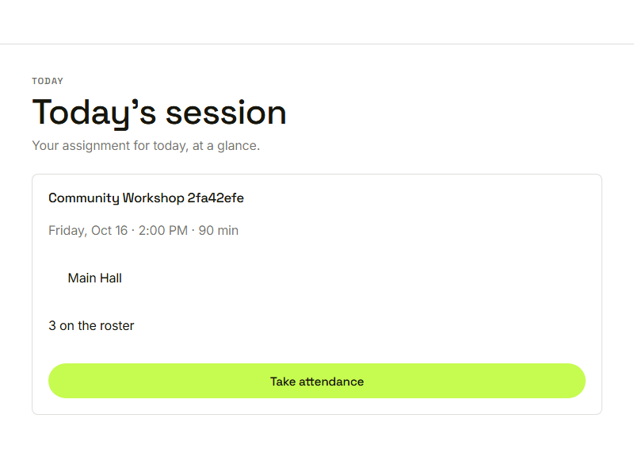
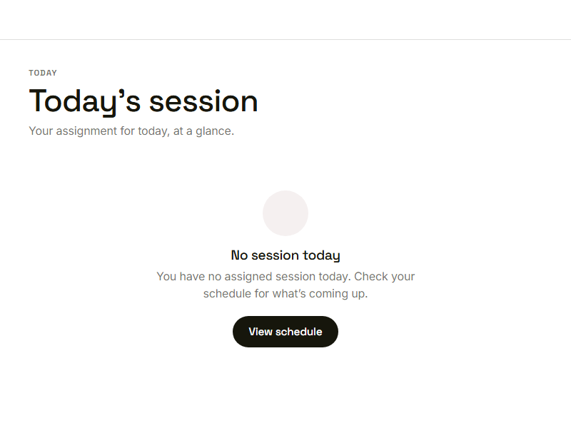

Waypoint · Video 065
Viewing today's session
Where to be and what to do, at a glance
Today's session

Title, time, length, location and a head count
Only what the job needs
Only today's assigned session
A head count, never names or progress
Out-of-scope requests are refused, checked on the server
One button to attendance
Take attendance
No session today

A clear message and a way to the schedule
Things to remember
Volunteers land on today's session
One card: title, time, length, location, head count
Only the assigned session is visible
No session today points to the schedule